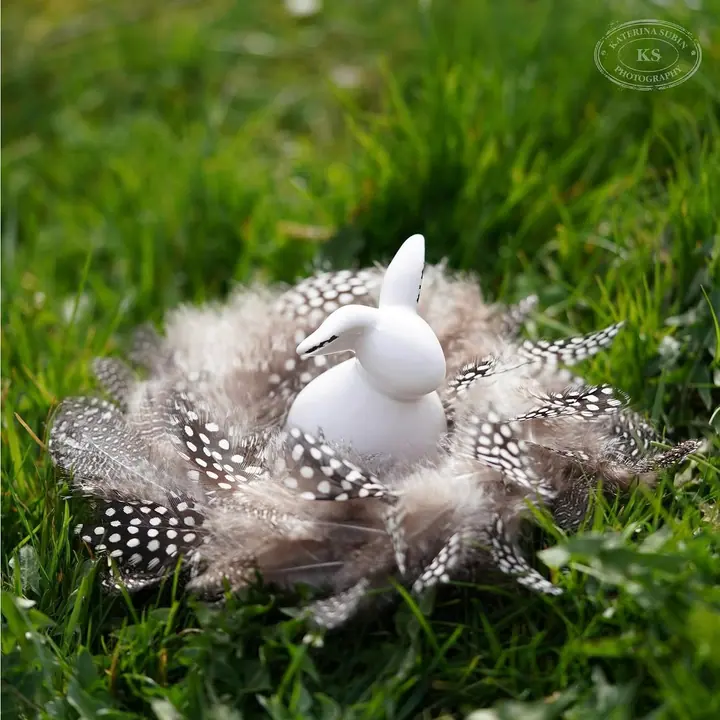
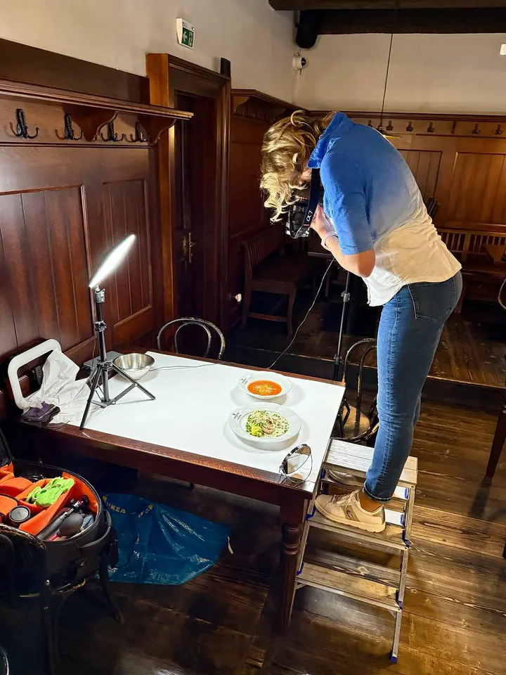
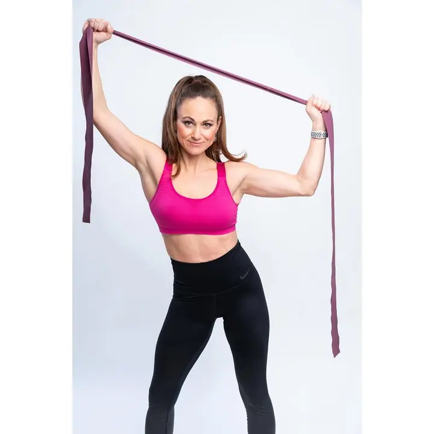
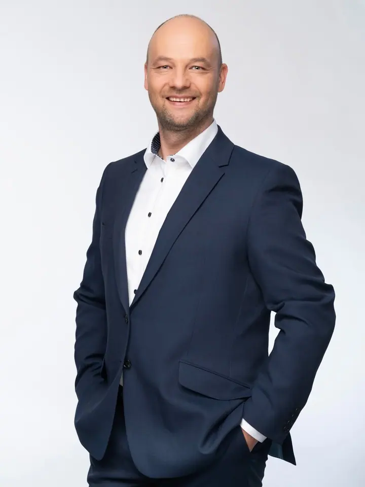
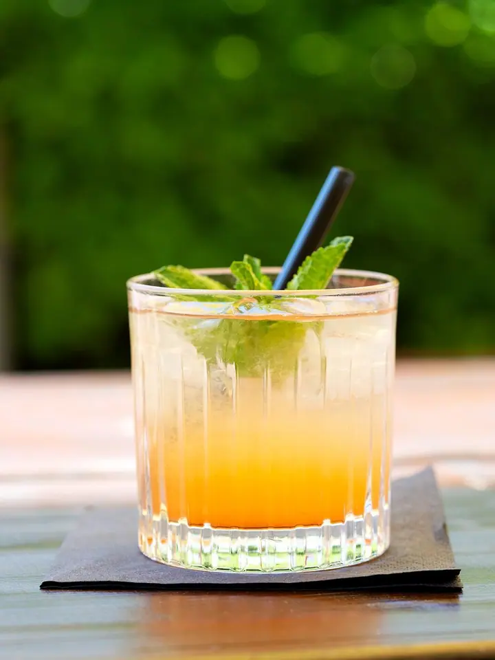
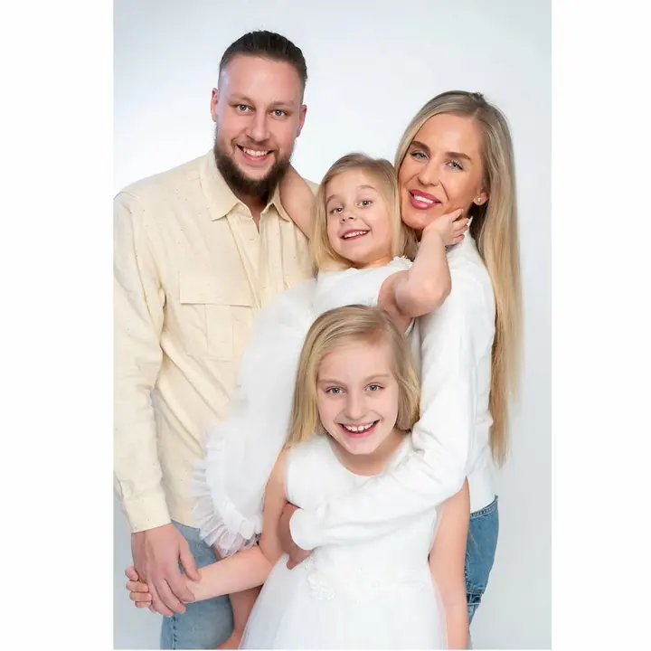

01 / 04
Byznys a brandové portréty
Oficiální portréty a byznys profily pro váš web i sociální sítě. Fotky, které vyjádří vás a vyprávějí váš příběh, aby vaše značka působila profesionálně a jednotně.
Zeptat se na termín→





Fotky, které vaši značku posunou dál
Zeptat se na termín →(01) Ahoj
Jmenuji se Kateřina Šubínová a jsem portrétní a brandová fotografka z Prahy. Fotím byznys portréty , produkty, jídlo a nápoje i rodiny . Pomáhám rostoucím českým značkám ke kvalitním fotkám, abyste měli víc času na vlastní firmu.
606příspěvků s fotkami a příběhy
(02) Co fotím
01 / 04
Oficiální portréty a byznys profily pro váš web i sociální sítě. Fotky, které vyjádří vás a vyprávějí váš příběh, aby vaše značka působila profesionálně a jednotně.
Zeptat se na termín→02 / 04
Produktové fotky šperků, květinových aranží, jídel i nápojů pro e-shopy a menší české značky. Produkty sama naaranžuji a nadekoruji, aby se do nich člověk nejradši hned zakousl.
Zeptat se na termín→03 / 04
Portréty, rodinná fotografie a focení miminek. Vznikají fotky, které vám zůstanou jako vzpomínka a klidně i jako obraz na zdi doma.
Zeptat se na termín→Dále nabízím
Osobité fotoobrazy do interiéru, od květin po Toskánsko. Připravím je na míru, od návrhu fotek až po adjustaci, paspartu a rám.
↗(04) Postup
Od první zprávy po hotovou galerii.
Krok 1 z 4
Napíšete mi nebo zavoláte a probereme, co vaše značka potřebuje a k čemu fotky použijete.
Krok 2 z 4
Navrhnu vám konkrétní plán podle vašich přání a možností. Dopředu budete znát časovou i finanční náročnost.
Krok 3 z 4
Připravím aranžmá, dekorace i světlo. Vy se nemusíte o nic starat, ani o pokusy se světlem.
Krok 4 z 4
Fotky upravím do jednotné, ucelené podoby, aby vaše značka působila profesionálně, a předám vám je hotové k použití.
Vy se věnujte podnikání, o fotky se postarám já.
(05) Za objektivem
Rozběhlo se vám podnikání a fotky z mobilu už nestačí? Přesně tady začínám já. Pomáhám menším českým značkám, kavárnám, uzenářům, kosmetičkám i koučkám, aby jejich web a sociální sítě vypadaly profesionálně a jednotně.
Navrhnu vám konkrétní plán focení podle vašich přání, požadavků a možností. Dopředu budete vědět, kolik času a peněz to zabere. Produkty sama naaranžuji a nadekoruji, postarám se o světlo i úpravy, takže vy se můžete věnovat podnikání nebo tvorbě.
Mimo zakázky fotím květiny, zahrady a místa, kam se dostanu na cestách. Z těchto fotek vznikají fotoobrazy do domovů i firemních interiérů. A když se zrovna nerada fotíte, nebojte se, společně to zvládneme tak, abyste na fotkách vypadala krásně a přirozeně.
Kateřina
Kateřina Šubínová · Portrétní a brandová fotografka
Určitě. Spousta mých klientek se před objektivem necítí jistě. Při focení vás povedu tak, abyste na fotkách vypadala krásně a přirozeně.
Záleží na rozsahu a zadání. Cenu i čas uvidíte v plánu focení, který vám připravím ještě předtím, než se do čehokoli pustíme.
Ano. Produkty a jídlo sama naaranžuji a nadekoruji, aby fotky vypadaly chutně a odpovídaly stylu vaší značky.
Ano, dělám fotoobrazy do domovů i firemních prostor. Formát, adjustaci, paspartu i rám připravím na míru vašemu interiéru.
(07) Kontakt
Napište pár vět o tom, co si představujete, a termín, který se vám hodí.
katerina@subin.cz